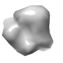
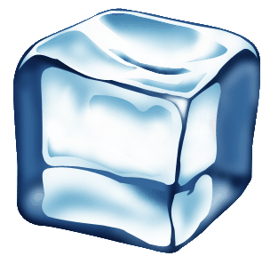
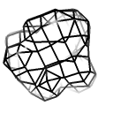

Visualisation and Navigation¶
(NEW in 1.0b3: if you’re viewing this from within ChimeraX, you may prefer using the interactive :ref:`isolde_intro_tutorial` tutorial to acquaint yourself with ISOLDE’s controls.)
(General note: if you open a large model in ChimeraX it will often automatically switch to its high-quality rendering mode with full shadows and ambient occlusion. While beautiful, this is sadly too slow to work with ISOLDE. You can switch back to simple lighting by clicking the yellow spotlight button in ChimeraX’s top panel, or entering “lighting simple” in the ChimeraX command line)
General layout¶
After loading a model and map (see Preparing a model for simulation) or simply clicking “Load demo”, your ChimeraX display should look something like the screenshot below (you may need to use the standard ChimeraX atom display controls to set the atom display styles to your liking first).
A typical ISOLDE scene. The default background colour in ChimeraX is black
like in this image, but personally I prefer white and will be using it for
most of this tutorial. You can change background colour to black, white or
grey using the square buttons near the middle of the ChimeraX display
toolbar (top of the ChimeraX window), or set bgColor <color> in the
ChimeraX command line if you’re feeling adventurous.¶
(Helpful hint: display of hydrogen atoms can be adjusted to your preference at
any time using the show and hide commands. For example,
show H will show all hydrogens, and hide HC will hide only non-polar
hydrogens.)
First, let’s talk about what’s changed in the model itself. Perhaps most immediately obvious is the change in the appearance of the cartoon: it’s now much thinner than you’re probably used to seeing. This is to ensure that it doesn’t get in the way of seeing the atoms themselves, while still providing valuable information about overall topology and secondary structure.
Next (if you’re working with a crystal structure) you might notice that your model has been joined by one or more darker copies of itself. These are the symmetry contacts in the crystal lattice. The symmetry atoms are non-interactive “ghosts” - while they will update instantly when the “real” atoms change, you cannot select or move them, and they won’t contribute to simulations. Hovering your mouse over one, however, will give you a popup telling you its name and symmetry operator:
Symmetry atoms know who they are¶
You’ll also note that you can no longer see all of the atoms (nor all of the
map). By default atom display is restricted to residues approaching within 15Å
of the central pivot point, while the map is restricted to a 12Å sphere. You can
adjust the display radius at any time (or simply return to this display mode)
using the clipper spotlight command. Other display options suited to
isolating issues in low-resolution maps will be discussed below.
Zooming and Panning¶
(NOTE: Some ChimeraX functions may change the behaviour of the centre of rotation to a mode incompatible with the behaviour described below. If you find things not behaving as they should (e.g. the pivot indicator no longer remains in the centre of the screen), type ``cofr center showpivot true`` in the ChimeraX command line or just click the ISOLDE Spotlight Mode button)
If you’ve spent some time using ChimeraX before, you’ve probably already tried to zoom in using the scroll wheel. That won’t work in ISOLDE: since model building requires regular adjustment of map contours, the scroll wheel is co-opted to perform that all-important function. A special zoom mode (designed to bring you inside the model while fading out background details) has instead been mapped to shift-right-click-and-drag. You can adjust the relative thickness of the slab you view (that is, the distance between front and back clipping planes) using shift-scroll. Panning (that is, translating the display up-down and left-right) is the ChimeraX standard middle-click-and-drag.
Adjusting the maps¶
Adjusting map contour levels is done using mouse scroll. The current contour level along with the map being adjusted will appear in the status bar:

To choose which map is re-contoured by scrolling, use ctrl-scroll. This will cycle through the available maps, selecting (i.e. highlighting in green) the current choice in the GUI window and showing its name in the status bar:

The last chosen map will be remembered for contouring purposes until the next use of ctrl-scroll.
Options for visualisation of individual maps are available via the Show map settings button on ISOLDE’s Sim settings tab. That should give you something like this:
Control panel for individual map settings¶
Top left |
Drop-down menu to choose the map to adjust |
Top right |
Choose whether or not this map should behave as a MDFF potential (disabled for live x-ray maps) |
Middle |
How strongly this map “pulls” on atoms. This will be important later. |
 |
Switch to an opaque surface representation |
 |
Switch to a transparent surface representation |
 |
Switch to a mesh representation |
Set (a) custom colour(s) (single colour for standard maps, or two colours for difference maps) |
Personally, I like to display the smoothest of my loaded maps in mesh representation at a low contour, and the sharpest in transparent surface representation at a higher contour - but this is a matter of individual preference.
Selecting atoms¶
While ISOLDE is running, it makes a few changes to how mouse-based selection works. Specifically, only atoms in the currently selected model will be selectable. Further, while a simulation is running only the mobile atoms will be selectable. Other than that, behaviour is quite similar to standard ChimeraX:
- ctrl-click (and drag): select an atom (group of atoms), discarding any
previous selection. Modifiers:
shift : next selection adds to any existing selection
alt : next selection is subtracted from any existing selection.
A very useful built-in ChimeraX feature allows you to grow and shrink your selection using the keyboard. With some atoms selected, up arrow will expand it first to whole residues, then to whole secondary structure elements, then whole chains, then the whole model. Down arrow will progressively roll back previous up arrow presses. I highly recommend familiarising yourself with how this works.
Masking the maps¶
While the default Spotlight Mode is useful for general “browsing” through your model, it does not lend itself well to systematic exploration and evaluation / diagnosis of errors. As the model gets larger and the resolution gets lower, it gets easier and easier to get lost. Not only that, but it is fairly common for systematic errors in lower resolution models to span anywhere up to dozens of residues - trying to evaluate these using the spherical map view can easily become a frustrating exercise in trying to see the forest through the trees!
This is where the map masking toolbar found at the bottom right of the ISOLDE panel becomes useful:
Useful buttons for map/model visualisation¶
Focus |
If checked, stepping or masking will re-focus the main view on the atomic selection. |
Clicking the right (left) arrow button will step forward (back) through the structure in overlapping steps of two secondary structure elements at a time (plus flanking unstructured loops/turns). At each step the maps are masked to cover the resulting selection with some surrounding context, while distant atoms are hidden. If the focus checkbox is checked, the view will be re-focused on the first residue in the selection (taking into account the direction of the step). |
|
Displays all currently selected atoms plus immediate surrounds and masks the maps to the selection. All atoms distant to the selection will be hidden. |
|
Returns to spotlight (scrolling sphere) mode. |
{kind=link}
{kind=link}
{kind=link}
You may also isolate any arbitrary selection of atoms using the clipper
isolate command.
Now that you know your way around, it’s time to move on to Starting a simulation.